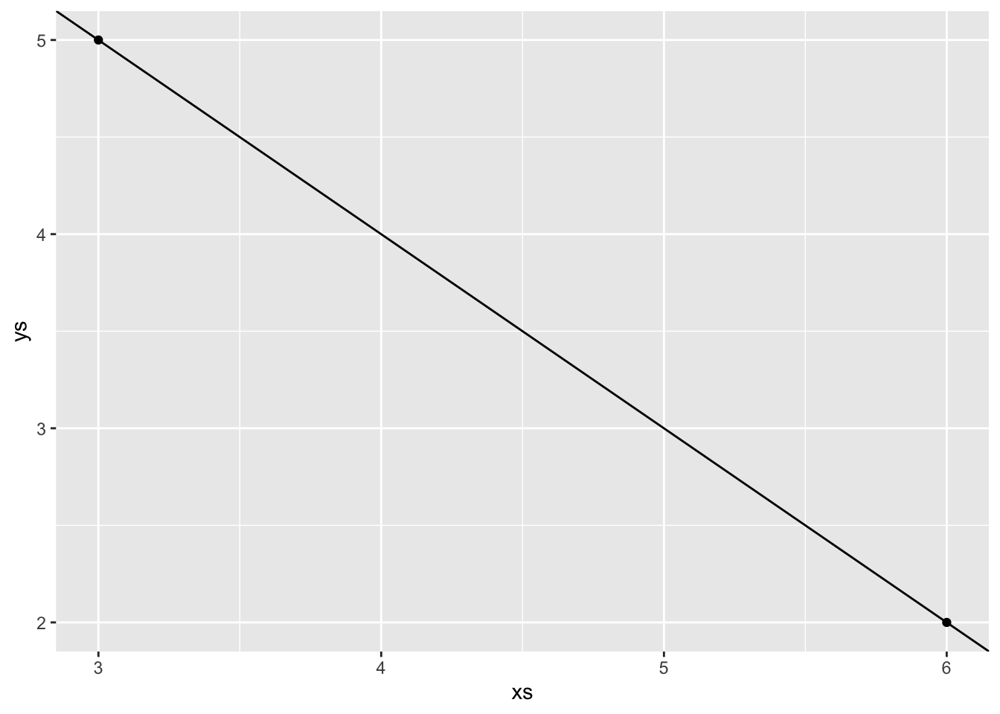
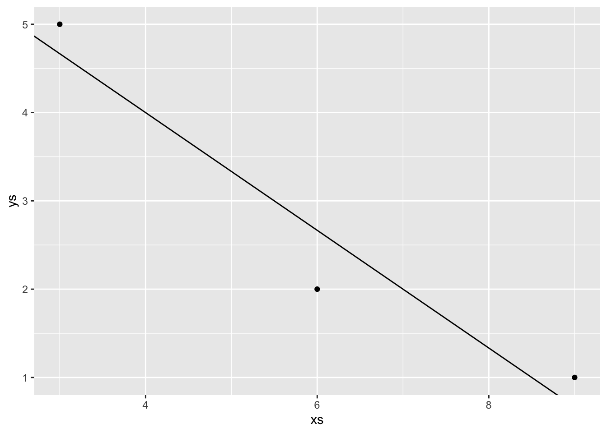
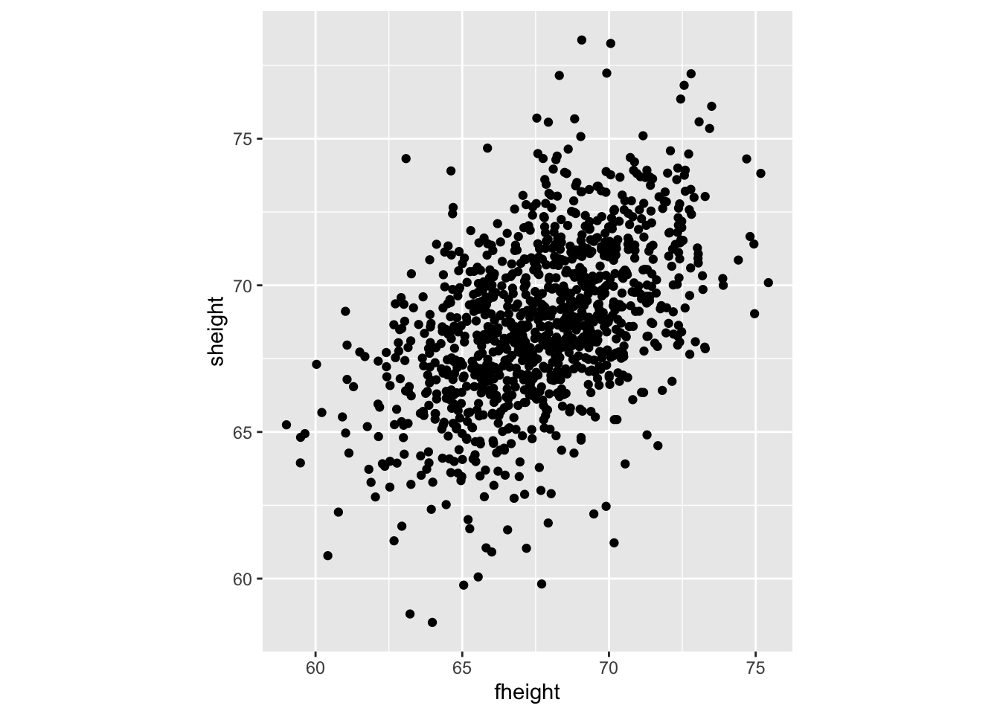
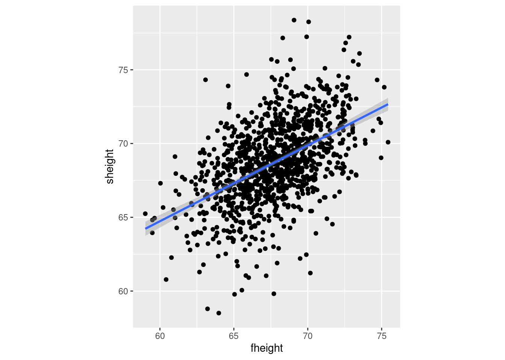

library(tidyverse) # our friend the tidyverse
library(ggfortify) 8 Review of linear algebra
Goals
- Solving linear equations
- Best-fit line through multiple data points
- Concepts of linearity and vector spaces
- Representation of vectors in multiple bases
- Eigenvalues and eigenvectors of matrices
8.1 Solving multivariate linear equations
Linear algebra is intimately tied to linear equations, that is, to equations where all variables are multiplied by constant terms and added together. Linear equations with one variable are easily solved by division, for example:
\[ 4x = 20 \]
is solved by dividing both sides by 4, obtaining the unique solution \(x=5\).
The situation gets more interesting when multiple variables are involved, with multiple equations, for example:
\[ \begin{aligned} 4x - 3y &= 5 \\ -x + 2y &= 10 \end{aligned} \]
There are multiple ways to solve this, for example solving one equation for one variable in terms of the other, then substituting it into the second equation to obtain a one-variable problem. A more general approach involves writing this problem in terms of a matrix \(\mathbf A\) that contains the multiplicative constants of \(x\) and \(y\) and a vector \(\vec b\) that contains the right-hand side constants:
\[ \begin{aligned} \mathbf{A} = \begin{pmatrix} 4 & -3 \\ -1 & 2 \end{pmatrix} \;\;\; \vec{b} = \begin{pmatrix}5 \\ 10 \end{pmatrix} &\;\;\; \vec{x} = \begin{pmatrix} x \\ y \end{pmatrix} \\ \mathbf{A} \vec x = \vec b & \end{aligned} \]
This now looks analogous to the one-variable equation above, which we solved by dividing both sides by the multiple of \(x\). The difficulty is that matrix operations are more complicated than scalar multiplication and division. Matrix multiplication is used in the equation above to multiply all the coefficients in the matrix by their respective variables, which involves a relatively complicated procedure in general.
The “division” equivalent is called matrix inversion and it is even more complicated. First, we need to define the identity matrix, or the equivalent of the number 1 for matrix multiplication. The identity matrix is defined only for square matrices (equal number of rows and columns), so a size \(n\) by \(n\) identity matrix is define to have all 1s on the diagonal and all zeros on the off-diagonal: \[ I = \begin{pmatrix} 1 & 0 & \dots & 0 \\ 0 & 1 &\dots & 0 \\ \vdots & \vdots & \ddots & \vdots \\ 0 & 0 &\dots & 1\end{pmatrix} \] The identity matrix is special because multiplying any other matrix (of compatible size) by it results in the same exact matrix (this is easy to check on a couple of examples for \(2 \times 2\) or \(3 \times 3\) matrices):
\[ I A = A I = A \] Then for an \(n\) by \(n\) matrix \(A\) its inverse \(A^{-1}\) is defined to be the matrix multiplication by which results in the identity matrix, that is: \[ A^{-1} A = A A^{-1} = I \] Defining the inverse is one task, but calculating it for any given matrix, especially of large size, is quite laborious. We will not describe the algorithms here, but you can read about Gauss-Jordan elimination, which is one classic example. One important point is that not all matrices are invertible, and for some no inverse matrix exists, analogous to zero for real number division. The difference is that there are infinitely many matrices for which this is the case, called singular matrices.
In the cases in which the inverse matrix exists, the linear system of equations can be solved by multiplying both sides by the inverse matrix, like this: \[ \vec x = \mathbf{A}^{-1}\vec b \]
Example: Take the linear \(2 \times 2\) system of equations of above and solve it using matrix inversion.The R function solve() calculates the inverse and multiplies it by the constant vector b:
A <- matrix(c(4,-1,-3,2), nrow = 2)
b <- c(5,10)
solve(A,b)[1] 8 98.2 Fitting a line to data
One geometric application of solving multiple linear equations is to find the coefficients of a line that passes through two points in the 2-dimensional plane (or of a plane that passes through three points in three-dimensional space, but we won’t go there.) In that case, the coordinates of the points are the data, and the unknown variables are the parameters slope \(m\) and intercept \(b\) of the line that we want to find.
Example: If the data set consists of two points \((3,5), (6, 2)\), then finding the best fit values of \(m\) and \(b\) means solving the following two equations:
\[ \begin{aligned} 3m + b &= 5 \\ 6m + b &= 2 \end{aligned} \]
These equations have a solution for the slope and intercept, which can be calculated in R using solve() and then plot the line with the parameters from the solution vector beta:
xs <- c(3, 6)
ys <- c(5, 2)
A <- matrix(c(xs[1], xs[2], 1, 1), nrow = 2)
b <- c(ys[1], ys[2])
beta <- solve(A, b)
data1 <- tibble(xs, ys)
ggplot(data = data1) +
aes(x = xs, y = ys) +
geom_point() +
geom_abline(slope = beta[1], intercept = beta[2])
However, a data set with two points is very small and nobody would accept these values as reasonable estimates. Let us add one more data point, to increase our sample size to three: \((3,5), (6, 2), (9, 1)\). How do you find the best fit slope and intercept?
Bad idea: take two points and find a line, that is the slope and the intercept, that passes through the two. It should be clear why this is a bad idea: we are arbitrarily ignoring some of the data, while perfectly fitting two points. So how do we use all the data? Let us write down the equations that a line with slope \(m\) and intercept \(b\) have to satisfy in order to fit our data points:
\[ \begin{aligned} 3m + b = 5 \\ 6m + b = 2\\ 9m + b = 1 \end{aligned} \]
This system has no exact solution, since there are three equations and only two unknowns. We need to find \(m\) and \(b\) such that they are a “best fit” to the data, not the perfect solution.
8.2.1 Least-squares line
Let us write the equation in matrix form as follows:
\[ \begin{aligned} \mathbf{A} = \begin{pmatrix} 3 & 1 \\ 6 & 1 \\ 9 & 1 \end{pmatrix} \;\;\; \vec{b} = \begin{pmatrix}5 \\ 2 \\ 1 \end{pmatrix} \;\;\; \vec{\beta} = \begin{pmatrix} m \\ b \end{pmatrix} \\ \mathbf{A} \vec \beta = \vec b \end{aligned} \]
Mathematically, the problem is that one cannot invert a non-square matrix. However, there is a way of turning the matrix into a square one, by multiplying it by its own transpose (same matrix with rows and columns reversed):
\[ \mathbf{A}^T \mathbf{A} \vec \beta = \mathbf{A}^T \vec b \] Exercise: Carry out the matrix multiplications to verify that \(\mathbf{A}^T \mathbf{A}\) is a \(2 \times 2\) matrix and \(\mathbf{A}^T \vec b\) is a vector of length 2.
Now we can solve this equation with a square matrix \(\mathbf{A}^T \mathbf{A}\) by multiplying both sides by the inverse! In general, for an \(n\)-dimensional data set consisting of a bunch of values of \(x\) and \(y\), the process looks like this:
\[ \vec Y = \begin{pmatrix} y_1\\ y_2\\ \vdots \\ y_n \end{pmatrix} \;\;\; \mathbf{X} = \begin{pmatrix} 1 & x_1\\ 1 & x_2\\ \vdots & \vdots \\ 1 & x_n \end{pmatrix} \;\;\; \mathbf{\beta} = \begin{pmatrix} m \\ b \end{pmatrix} \\ \beta = (\mathbf{X}^{T} \mathbf{X})^{-1} \mathbf{X}^{T}\vec Y \] Example: Let us see the best-fit line for the 3-point data set above:
xs <- c(3, 6, 9)
ys <- c(5, 2, 1)
A <- matrix(c(xs[1], xs[2], xs[3], 1, 1, 1), nrow = 3)
b <- c(ys[1], ys[2], ys[3])
beta <- solve(t(A) %*% A, t(A) %*% b)
data1 <- tibble(xs, ys)
ggplot(data = data1) +
aes(x = xs, y = ys) +
geom_point() +
geom_abline(slope = beta[1], intercept = beta[2])
Let us use the classic data set of Karl Pearson’s from 1903 containing the height of fathers and sons, which we will return to next week when we tackle linear regression properly:
require(UsingR)
data("father.son")
pl <- ggplot(data = father.son) +
aes(x = fheight, y = sheight) +
geom_point() +
coord_equal()
pl
Exercise: Let’s try to find the best fit line to this data set (the hard way) using the same process as above for the three - point data set:
Of course, R can do this calculation for you with just one command:
best_beta_easy <- lm(sheight ~ fheight, data = father.son)
best_beta_easy
Call:
lm(formula = sheight ~ fheight, data = father.son)
Coefficients:
(Intercept) fheight
33.8866 0.5141 But it feels good to know that this is not black magic! In fact, plotting it on top of the data does not even require computing the coefficients:
pl + geom_smooth(method = "lm") # lm stands for linear model`geom_smooth()` using formula = 'y ~ x'
8.3 Linearity and vector spaces
We have dealt with linear models in various guises, so now would be a good time to define properly what linearity means. The word comes from the shape of graphs of linear functions of one variable, e.g. \(f(x) = a x + b\), but the algebraic meaning rests on the following two general properties:
Definition. A linear transformation or linear operator is a mapping \(L\) between two sets of vectors with the following properties:
- (scalar multiplication) \(L(c \vec v) = c L(\vec v)\); where \(c\) is a scalar and \(\vec v\) is a vector
- (additive) \(L(\vec v_1 + \vec v_2) = L(\vec v_1) + L(\vec v_2)\); where \(\vec v_1\) and \(\vec v_2\) are vectors
Here we have two types of objects: vectors and transformations/operators that act on those vectors. The basic example of this are vectors and matrices, because a matrix multiplied by a vector (on the right) results another vector, provided the number of columns in the matrix is the same as the number of rows in the vector. This can be interpreted as the matrix transforming the vector \(\vec v\) into another one: \(A \times \vec v = \vec u\).
Example: Let us multiply the following matrix and vector (specially chosen to make a point):
A <- matrix(c(2, 2, 1, 3), nrow = 2)
vec1 <- c(1, -1)
vec2 <- A %*% vec1
print(vec1)[1] 1 -1print(vec2) [,1]
[1,] 1
[2,] -1We see that this particular vector \((1,-1)\) is unchanged when multiplied by this matrix, or we can say that the matrix multiplication is equivalent to multiplication by 1. Here is another such vector for the same matrix:
vec1 <- c(1, 2)
vec2 <- A %*% vec1
print(vec1)[1] 1 2print(vec2) [,1]
[1,] 4
[2,] 8In this case, the vector is changed, but only by multiplication by a constant (4). Thus the geometric direction of the vector remained unchanged.
The notion of linearity leads to the important idea of combining different vectors:
Definition: A linear combination of \(n\) vectors \(\{ \vec v_i \}\) is a weighted sum of these vectors with any real numbers \(\{a_i\}\): \[ a_1 \vec v_1+ a_2 \vec v_2... + a_n \vec v_n\]
Linear combinations arise naturally from the notion of linearity, combining the additive property and the scalar multiplication property. Speaking intuitively, a linear combination of vectors produces a new vector that is related to the original set. Linear combinations give a simple way of generating new vectors, and thus invite the following definition for a collection of vectors closed under linear combinations:
Definition. A vector space is a collection of vectors such that a linear combination of any \(n\) vectors is contained in the vector space.
The most common examples are the spaces of all real-valued vectors of dimension \(n\), which are denoted by \(\mathbb{R}^n\). For instance, \(\mathbb{R}^2\) (pronounced “r two”) is the vector space of two dimensional real-valued vectors such as \((1,3)\) and \((\pi, -\sqrt{17})\); similarly, \(\mathbb{R}^3\) is the vector space consisting of three dimensional real-valued vectors such as \((0.1,0,-5.6)\). You can convince yourself, by taking linear combinations of vectors, that these vector spaces contain all the points in the usual Euclidean plane and three-dimensional space. The real number line can also be thought of as the vector space \(\mathbb{R}^1\).
8.3.1 Linear independence and basis vectors
How can we describe a vector space without trying to list all of its elements? We know that one can generate an element by taking linear combinations of vectors. It turns out that it is possible to generate (or “span”) a vector space by taking linear combinations of a subset of its vectors. The challenge is to find a minimal subset of subset that is not redundant. In order to do this, we first introduce a new concept:
Definition: A set of vectors \(\{ \vec v_i \}\) is called linearly independent if the only linear combination involving them that equals the zero vector is if all the coefficients are zero. ( \(a_1 \vec v_1 + a_2 \vec v_2 + ... + a_n \vec v_n = 0\) only if \(a_i = 0\) for all \(i\).)
In the familiar Euclidean spaces, e.g. \(\mathbb{R}^2\), linear independence has a geometric meaning: two vectors are linearly independent if the segments from the origin to the endpoint do not lie on the same line. But it can be shown that any set of three vectors in the plane is linearly dependent, because there are only two dimensions in the vector space. This brings us to the key definition of this section:
Definition: A basis of a vector space is a linearly independent set of vectors that generate (or span) the vector space. The number of vectors (cardinality) in such a set is called the dimension of the vector space.
A vector space generally has many possible bases, as illustrated in figure. In the case of \(\mathbb{R}^2\), the usual (canonical) basis set is \(\{(1,0); (0,1)\}\) which obviously generates any point on the plane and is linearly independent. But any two linearly independent vectors can generate any vector in the plane.
Example: The vector \(\vec r = (2,1)\) can be represented as a linear combination of the two canonical vectors: \(\vec r = 2\times (1,0)+1\times (0,1)\). Let us choose another basis set, say \(\{(1,1); (-1,1)\}\) (this is the canonical basis vectors rotated by \(\pi/2\).) The same vector can be represented by a linear combination of these two vectors, with coefficients \(1.5\) and \(-0.5\): \(\vec r = 1.5\times (1,1) - 0.5 \times (-1,1)\). If we call the first basis \(C\) for canonical and the second basis \(D\) for different, we can write the same vector using different sets of coordinates for each basis:
\[ \vec r_{C} = (2,1); \; \vec r_D = (1.5, -0.5) \]
8.3.2 Projections and changes of basis
The representation of an arbitrary vector (point) in a vector space as a linear combination of a given basis set is called the decomposition of the point in terms of the basis, which gives the coordinates for the vector in terms of each basis vector. The decomposition of a point in terms of a particular basis is very useful in high-dimensional spaces, where a clever choice of a basis can allow a description of a set of points (such as a data set) in terms of contributions of only a few basis vectors, if the data set primarily extends only in a few dimensions.
To obtain the coefficients of the basis vectors in a decomposition of a vector \(\vec r\), we need to perform what is termed a projection of the vector onto the basis vectors. Think of shining a light perpendicular to the basis vector, and measuring the length of the shadow cast by the vector \(\vec r\) onto \(\vec v_i\). If the vectors are parallel, the shadow is equal to the length of \(\vec r\); if they are orthogonal, the shadow is nonexistent. To find the length of the shadow, use the inner product of \(\vec r\) and \(\vec v\), which as you recall corresponds to the cosine of the angle between the two vectors multiplied by their norms: \(\left\langle \vec r, \vec v\right \rangle =\vert\vec r\vert \vert\vec v\vert\cos(\theta)\). We do not care about the length of the vector \(\vec v\) we are projecting onto, thus we divide the inner product by the square norm of \(\vec v\), and then multiply the vector \(\vec v\) by this projection coefficient:
\[ Proj(\vec r ; \vec v) = \frac{ \langle \vec r , \vec v \rangle } {\langle \vec v , \vec v \rangle } \vec v = \frac{ \langle \vec r , \vec v \rangle } {\vert \vec v \vert^2} \vec v= \frac{ \vert\vec r\vert \cos(\theta) } {\vert \vec v \vert}\vec v \]
This formula gives the projection of the vector \(\vec r\) onto \(\vec v\), the result is a new vector in the direction of \(\vec v\), with the scalar coefficient \(a = \ \langle \vec r , \vec v \rangle /\vert \vec v \vert^2\).
Example: Here is how one might calculate the projection of the point \((2,1)\) onto the basis set \(\{(1,1); (-1,1)\}\):
v1 <- c(1, 1)
v2 <- c(-1, 1)
u <- c(2, 1)
ProjMat <- matrix(cbind(v1, v2),
byrow = T, nrow = 2)
print(ProjMat) [,1] [,2]
[1,] 1 1
[2,] -1 1ProjMat %*% u [,1]
[1,] 3
[2,] -1This is not quite right: the projection coefficients are off by a factor of two compared to the correct values in the example above. This is because we have neglected to normalize the basis vectors, so we should modify the script as follows:
v1 <- c(1, 1)
v1 <- v1 / (sum(v1^2))
v2 <- c(-1, 1)
v2 <- v2 / (sum(v2^2))
u <- c(2, 1)
ProjMat <- matrix(cbind(v1, v2),
byrow = T, nrow = 2)
print(ProjMat) [,1] [,2]
[1,] 0.5 0.5
[2,] -0.5 0.5print(ProjMat %*% u) [,1]
[1,] 1.5
[2,] -0.5This is an example of how to convert a vector/point from representation in one basis set to another. The new basis vectors, expressed in the original basis set, are arranged in a matrix by row, scaled by their norm squared, and multiplied by the vector that one wants to express in the new basis. The resulting vector contains the coordinates in the new basis.
8.4 Matrices as linear operators
8.4.1 Matrices transform vectors
In this section we will learn to characterize square matrices by finding special numbers and vectors associated with them. At the core of this analysis lies the concept of a matrix as an operator that transforms vectors by multiplication. To be clear, in this section we take as default that the matrices \(A\) are square, and that vectors \(\vec v\) are column vectors, and thus will multiply the matrix on the right: \(A \times \vec v\).
A matrix multiplied by a vector produces another vector, provided the number of columns in the matrix is the same as the number of rows in the vector. This can be interpreted as the matrix transforming the vector \(\vec v\) into another one: \(A \times \vec v = \vec u\). The resultant vector \(\vec u\) may or may not resemble \(\vec v\), but there are special vectors for which the transformation is very simple.
Example. Let us multiply the following matrix and vector (specially chosen to make a point):
\[ \left(\begin{array}{cc}2 & 1 \\ 2& 3\end{array}\right)\left(\begin{array}{c}1 \\ -1 \end{array}\right) = \left(\begin{array}{c}2 -1 \\ 2 - 3 \end{array}\right) = \left(\begin{array}{c} 1 \\ -1 \end{array}\right) \]
We see that this particular vector is unchanged when multiplied by this matrix, or we can say that the matrix multiplication is equivalent to multiplication by 1. Here is another such vector for the same matrix:
\[ \left(\begin{array}{cc}2 & 1 \\ 2& 3\end{array}\right)\left(\begin{array}{c}1 \\ 2 \end{array}\right) = \left(\begin{array}{c}2 +2 \\ 2 + 6 \end{array}\right) = \left(\begin{array}{c} 4 \\ 8 \end{array}\right) \]
In this case, the vector is changed, but only by multiplication by a constant (4). Thus the geometric direction of the vector remained unchanged.
Generally, a square matrix has an associated set of vectors for which multiplication by the matrix is equivalent to multiplication by a constant. This can be written down as a definition:
Definition. An eigenvector of a square matrix \(A\) is a vector \(\vec v\) for which matrix multiplication by \(A\) is equivalent to multiplication by a constant. This constant \(\lambda\) is called its eigenvalue of \(A\) corresponding the the eigenvector \(\vec v\). The relationship is summarized in the following equation:
\[ A \times \vec v = \lambda \vec v \]
Note that this equation combines a matrix (\(A\)), a vector (\(\vec v\)) and a scalar \(\lambda\), and that both sides of the equation are column vectors.
The definition does not specify how many such eigenvectors and eigenvalues can exist for a given matrix \(A\). There are usually as many such vectors \(\vec v\) and corresponding numbers \(\lambda\) as the number of rows or columns of the square matrix \(A\), so a 2 by 2 matrix has two eigenvectors and two eigenvalues, a 5x5 matrix has 5 of each, etc. One ironclad rule is that there cannot be more distinct eigenvalues than the matrix dimension. Some matrices possess fewer eigenvalues than the matrix dimension, those are said to have a degenerate set of eigenvalues, and at least two of the eigenvectors share the same eigenvalue.
The situation with eigenvectors is trickier. There are some matrices for which any vector is an eigenvector, and others which have a limited set of eigenvectors. What is difficult about counting eigenvectors is that an eigenvector is still an eigenvector when multiplied by a constant. You can show that for any matrix, multiplication by a constant is commutative: \(cA = Ac\), where \(A\) is a matrix and \(c\) is a constant. This leads us to the important result that if \(\vec v\) is an eigenvector with eigenvalue \(\lambda\), then any scalar multiple \(c \vec v\) is also an eigenvector with the same eigenvalue. The following demonstrates this algebraically:
\[ A \times (c \vec v) = c A \times \vec v = c \lambda \vec v = \lambda (c \vec v) \]
This shows that when the vector \(c \vec v\) is multiplied by the matrix \(A\), it results in its being multiplied by the same number \(\lambda\), so by definition it is an eigenvector. Therefore, an eigenvector \(\vec v\) is not unique, as any constant multiple \(c \vec v\) is also an eigenvector. It is more useful to think not of a single eigenvector \(\vec v\), but of a collection of vectors that can be inter-converted by scalar multiplication that are all essentially the same eigenvector. Another way to represent this, if the eigenvector is real, is that an eigenvector as a direction that remains unchanged by multiplication by the matrix, such as direction of the vector \(v\) in the figure below. As mentioned above, this is true only for real eigenvalues and eigenvectors, since complex eigenvectors cannot be used to define a direction in a real space.

To summarize, eigenvalues and eigenvectors of a matrix are a set of numbers and a set of vectors (up to scalar multiple) that describe the action of the matrix as a multiplicative operator on vectors. “Well-behaved” square \(n \times n\) matrices have \(n\) distinct eigenvalues and \(n\) eigenvectors pointing in distinct directions. In a deep sense, the collection of eigenvectors and eigenvalues defines a matrix \(A\), which is why an older name for them is characteristic vectors and values.
8.4.2 calculating eigenvalues
Finding the eigenvalues and eigenvectors analytically, that is on paper, is quite laborious even for 3 by 3 or 4 by 4 matrices and for larger ones there is no analytical solution. In practice, the task is outsourced to a computer, and MATLAB has a number of functions for this purpose. Nevertheless, it is useful to go through the process in 2 dimensions in order to gain an understanding of what is involved. From the definition of eigenvalues and eigenvectors, the condition can be written in terms of the four elements of a 2 by 2 matrix:
\[ \left(\begin{array}{cc}a & b \\c & d\end{array}\right)\left(\begin{array}{c}v_1 \\ v_2 \end{array}\right) = \left(\begin{array}{c}av_1 +b v_2\\ cv_1+ dv_2 \end{array}\right) = \lambda \left(\begin{array}{c}v_1 \\ v_2 \end{array}\right) \]
This is now a system of two linear algebraic equations, which we can solve by substitution. First, let us solve for \(v_1\) in the first row, to get \[v_1 = \frac{-bv_2}{a-\lambda}\] Then we substitute this into the second equation and get:
\[ \frac{-bcv_2}{a-\lambda} +(d-\lambda)v_2 = 0 \]
Since \(v_2\) multiplies both terms, and is not necessarily zero, we require that its multiplicative factor be zero. Doing a little algebra, we obtain the following, known as the characteristic equation of the matrix:
\[ -bc +(a-\lambda)(d-\lambda) = \lambda^2-(a+d)\lambda +ad-bc = 0 \]
This equation can be simplified by using two quantities we defined at the beginning of the section: the sum of the diagonal elements called the trace \(\tau = a+d\), and the determinant \(\Delta = ad-bc\). The quadratic equation has two solutions, dependent solely on \(\tau\) and \(\Delta\):
\[ \lambda = \frac{\tau \pm \sqrt{\tau^2-4\Delta}}{2} \]
This is the general expression for a 2 by 2 matrix, showing there are two possible eigenvalues. Note that if \(\tau^2-4\Delta>0\), the eigenvalues are real, if \(\tau^2-4\Delta<0\), they are complex (have real and imaginary parts), and if \(\tau^2-4\Delta=0\), there is only one eigenvalue. This situation is known as degenerate, because two eigenvectors share the same eigenvalue.
Example. Let us take the same matrix we looked at in the previous subsection:
\[ A = \left(\begin{array}{cc}2 & 1 \\ 2& 3\end{array}\right) \]
The trace of this matrix is \(\tau = 2+3 =5\) and the determinant is \(\Delta = 6 - 2 = 4\). Then by our formula, the eigenvalues are:
\[ \lambda = \frac{5 \pm \sqrt{5^2-4 \times 4}}{2} = \frac{5 \pm 3}{2} = 4, 1 \]
These are the multiples we found in the example above, as expected. Of course R has functions to calculate this instead of doing this by hand:
A <- matrix(c(2, 2, 1, 3), nrow =2)
eigs <- eigen(A)
eigs$values[1] 4 1eigs$vectors [,1] [,2]
[1,] -0.4472136 -0.7071068
[2,] -0.8944272 0.7071068Note: a real-valued matrix can have complex eigenvalues and eigenvectors, but whenever it acts on a real vector, the result is still real. This is because the complex numbers cancel each others imaginary parts.